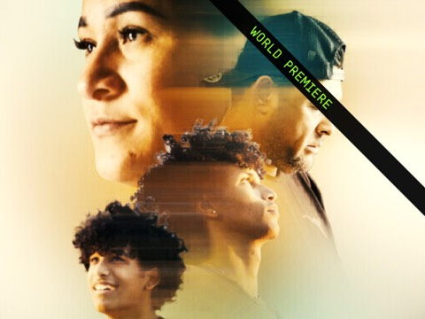

About the film

An unforgettable epic, running two-and-a-half hours and offering harrowing yet utterly urgent testimony from the friends and families of those who vanished. DARK SUNS chronicles the hundreds of murders of women, journalists, students, and activists in Mexico since the 1990s, and the insidious culture of cartel violence and state corruption behind them. Spanning the notorious femicides in Ciudad Juárez at the northern border to the murders of journalists in Veracruz in the south, director Julien Elie draws on the testimony of determined investigators, family members, journalists, priests, lawyers, and activists, tracing a path of organized and unpunished criminality that involves drug and human trafficking, extortion, kidnapping, and collusion with the governments on both sides of the border.
At the festival
- 2019 DC Premiere · Sunday, October 13, 2019 · 2:00 PM · Naval Heritage CenterPost-screening discussion to follow with journalist Ricardo Sandoval Palos
More films on these topics
- To Be ReconciledJames Christenson2021 · 29 min
 Poppy CrashAndalusia Knoll Soloff2019 · 11 min
Poppy CrashAndalusia Knoll Soloff2019 · 11 min Cartel LandMatthew Heineman2015 · 100 min
Cartel LandMatthew Heineman2015 · 100 min RescueSine Plambech2026 · 90 min
RescueSine Plambech2026 · 90 min No se ve desde acá (You Can't See It From Here)Enrique Pedráza-Botero2025 · 20 min
No se ve desde acá (You Can't See It From Here)Enrique Pedráza-Botero2025 · 20 min
Status: VenezuelanMauricio Rodriguez-Pons2025 · 35 min